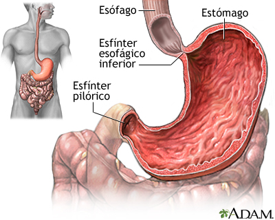

EstomagoEl estómago (del latín stomăchus, derivado del griego στόμαχος [stomachos], a partir del prefijo στόμα [stoma], «boca») es la porción del tubo digestivo situada entre el esófago y el intestino.1 En la especie humana se localiza en la región superior izquierda del abdomen, por debajo del diafragma. Es una cámara en la que se mezclan y almacenan los alimentos ingeridos que se van vaciando en pequeños intervalos hacia el duodeno gracias a los movimientos peristálticos, el vaciamiento gástrico completo necesita varias horas después de una comida copiosa. El estómago es muy distensible, por lo que varía considerablemente de tamaño dependiendo de si está lleno o vacío. Se divide en cuatro regiones principales, que se llaman: cardias que lo une al esófago, fundus, cuerpo y píloro que lo comunica con el intestino.2 Segrega varias sustancias que reciben en conjunto el nombre de jugo gástrico, formado principalmente por ácido clorhídrico y pepsina, enzima proteolítica que divide las proteínas en fragmentos de menor tamaño para facilitar su absorción. En el estómago los alimentos se transforman en una papilla pastosa que se llama quimo. Clica aqui para saber mas Volver |